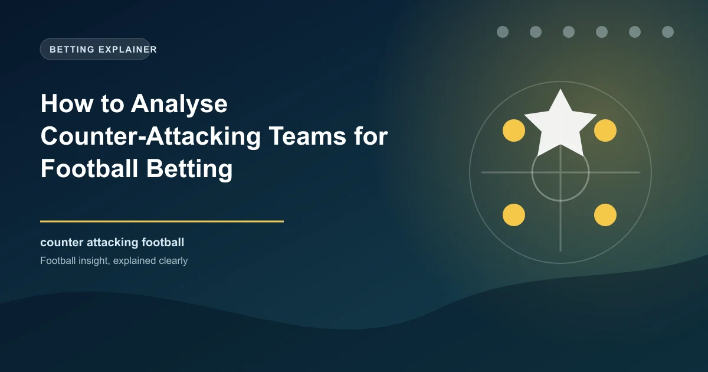

Counter-attacking football is one of the most fascinating and misunderstood tactical approaches in the sport. While possession-based teams dominate headlines and attract more fans, counter-attacking teams regularly produce results that defy their statistical profile. They may have less of the ball, fewer passes, and less time in the attacking third, but they convert their limited opportunities with devastating efficiency. For bettors, understanding counter-attacking football is essential because these teams create specific patterns in betting markets that can be exploited with the right knowledge.
The fundamental principle of counter-attacking football is using the opponent's attacking commitment against them. When a team pushes forward to create chances, they leave space behind their defensive line. A well-organised counter-attacking team absorbs pressure, wins the ball in dangerous areas, and transitions from defence to attack in seconds. The speed and efficiency of this transition is what makes counter-attacking teams so dangerous, and so difficult to bet against.
A counter-attacking team is defined not by a single statistic but by a combination of characteristics that distinguish them from possession-based or high-pressing teams. The most obvious marker is low possession, but possession alone is not sufficient to identify a counter-attacking team. Some teams have low possession because they are outclassed, not because they are choosing to cede the ball.
The defining features of a genuine counter-attacking team include:
A typical counter-attacking team might show these numbers: 38% average possession, 0.8 xG per match, 11.5 shots per match, but a conversion rate of 14% compared to the league average of 10%. They average 12.3 progressive carries per match (above average) despite having the ball less, because their transitions are fast and vertical. Their passes per defensive action (PPDA) is around 14 to 16, indicating a mid-block rather than a high press.
The key insight is that counter-attacking teams are not passive. They are choosing to defend in a specific area of the pitch and attack in a specific way. The tactical discipline required to execute this approach is enormous, which is why the best counter-attacking teams are usually the best-coached teams in their league.
Understanding the history of counter-attacking football helps bettors recognise the patterns and identify current teams that employ similar approaches.
Perhaps the most successful modern counter-attacking team, Atletico Madrid under Simeone has consistently achieved results that far exceed their squad budget. In their title-winning seasons, Atletico averaged possession figures well below 50% in most matches, yet created competitive xG through disciplined defensive organisation and rapid transitions through players like Antoine Griezmann and Diego Costa. Their defensive record was consistently the best in La Liga, which is the foundation of any successful counter-attacking team.
Leicester's Premier League title win remains one of the greatest sporting achievements in history, and it was built entirely on counter-attacking excellence. With an average possession of around 42%, they won the league by combining a compact defensive shape with the devastating pace of Jamie Vardy and the creative passing of Riyad Mahrez on the break. Their expected goals from fast breaks were the highest in the league, which directly translates to their dominance in counter-attacking situations.
Jose Mourinho's Inter Milan, particularly in their Champions League-winning 2009-10 season, perfected the art of defensive solidity and lethal counter-attacks. With players like Samuel Eto'o and Goran Pandev leading the break, Inter demonstrated that a team could win the biggest trophies while having significantly less possession than their opponents in almost every match. Mourinho's first Chelsea side similarly showed that defending deep and hitting on the counter was a viable strategy against even the most dominant possession teams.
Across all successful counter-attacking teams, three elements remain constant:
The tactical matchup that favours counter-attacking teams the most is against possession-dominant opponents. When a team pushes forward with 60% or more possession, they leave significant space behind their defensive line. This is precisely the scenario that counter-attacking teams are designed to exploit.
When a possession-dominant team commits players forward, their full-backs push high, their centre-backs spread wide to provide passing options, and their midfielders advance to support the attack. This creates large areas of the pitch that are undefended. A well-drilled counter-attacking team can exploit this space in three to four passes, moving the ball from their own penalty area to a shooting opportunity in a matter of seconds.
The data consistently shows that counter-attacking teams perform best when facing opponents who have high possession, high pass volumes, and a high defensive line. This combination creates the maximum amount of space for the counter-attacking team to exploit. Conversely, when counter-attacking teams face opponents who are also willing to cede possession and defend deep, the tactical advantage disappears because there is no space to counter into.
Understanding the weaknesses of counter-attacking teams is just as important as understanding their strengths. The most significant vulnerability is the mirror-image opponent: another low-block team that refuses to commit players forward.
When two counter-attacking teams face each other, the result is often a tactical stalemate with very few clear chances for either side. Both teams are willing to defend deep, both teams are waiting for the other to commit players forward, and neither team creates the space needed for effective counter-attacks. These matches frequently produce low-scoring draws or narrow victories decided by a single moment of individual quality.
Counter-attacking teams also struggle when they take an early lead. Once ahead, the onus shifts to the trailing team to push forward, which should theoretically create more counter-attacking opportunities. However, the leading team must maintain concentration and discipline for longer periods without the ball, and fatigue becomes a significant factor. Teams that defend for 80+ minutes often concede late goals simply because the physical and mental demands of sustained defending are enormous.
Now that you understand the characteristics and tendencies of counter-attacking teams, here are specific betting strategies that exploit their patterns.
The most direct application is backing counter-attacking teams when they are underdogs against possession-dominant opponents. Bookmakers often underestimate counter-attacking teams because their low possession and lower shot counts make them look inferior on the surface. However, the tactical matchup strongly favours the counter-attacking team when the opponent commits players forward.
Look for matches where a known counter-attacking team faces a possession-dominant favourite with a high defensive line. The odds will typically favour the possession team, but the counter-attacking team's probability of getting a result is higher than the odds suggest.
Counter-attacking teams have a complex relationship with total goals markets. On one hand, their defensive discipline reduces the number of goals they concede. On the other hand, their efficient attacking can produce goals in bursts. The net effect depends heavily on the opponent.
Both Teams to Score markets require careful analysis when counter-attacking teams are involved. Counter-attacking teams that face possession-dominant opponents have a reasonable BTTS probability because their defensive approach does involve conceding chances, and one or two of those chances may be converted. However, the best counter-attacking teams have such strong defensive records that BTTS becomes less likely.
The BTTS probability increases when a counter-attacking team faces another mid-table team with attacking quality. It decreases significantly when the counter-attacking team faces a possession-dominant side with a weak finishing record. Context is everything in BTTS markets involving counter-attacking teams.
Counter-attacking teams are frequently involved in matches that are 0-0 at half-time. Their approach requires patience, and they often absorb pressure for long periods before striking. This makes the Draw or 0-0 Half-Time result a frequently valuable bet when counter-attacking teams are involved, particularly in matches where both teams are cautious.
Counter-attacking teams are often at their most dangerous between the 60th and 80th minutes, when the opposing team has been pushing forward for an extended period and their defensive concentration begins to drop. Monitor live betting markets during this window for potential value on the counter-attacking team to score.
Counter-attacking football will never be as aesthetically pleasing as tiki-taka or as exciting as high-pressing football, but it is one of the most effective tactical approaches in the sport. For bettors, the key is recognising when a counter-attacking team is being undervalued by the bookmaker and when the tactical matchup favours their approach. With the right analysis, counter-attacking teams represent some of the most consistent value opportunities in football betting.
Check our free daily football predictions for expert analysis on every match, including tactical insights on counter-attacking teams.
 Win
Win